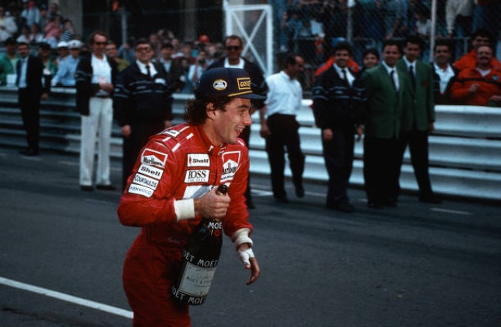

HOME
O INÍCIO
F1
CONQUISTAS

Títulos
1974
- Campeão Paulista de kart
1976
- Campeão Paulista de kart
1977
- Campeão Sul-americano de kart
1978
- Campeão Brasileiro de kart
1979
- Campeão Brasileiro de kart
1980
- Campeão Brasileiro de kart
1980
- Campeão Sul-americano de kart
1981
- Campeão da Fórmula Ford 1600
1982
- Campeão da Fórmula Ford 2000
1983
- Campeão da Fórmula 3 Inglesa
1988
- Campeão Mundial de F1
1990
- Campeão Mundial de F1
1991
- Campeão Mundial de F1
Recordes
Recordista de vitórias de
ponta a ponta (19)
Melhor porcentagem de pole positions para pilotos com mais de 100 GPs
Recordes de pole positions
consecutivas (8)
Piloto com mais primeiras filas
consecutivas (24)
Piloto que mais vezes fez a pole dentro de seu próprio país
Piloto que mais vezes largou na frente
num mesmo GP (8, em San Marino)
Piloto que mais fez poles consecutivas em
um mesmo GP (7 em San Marino)
Piloto que mais vezes venceu o tradicional
GP de Monaco (6)
Mais vitórias consecutivas
num mesmo GP (5: Monaco, 1989–1993)
Números totais na carreira
229 Corridas disputadas em todas as categorias, exceto as de Kart
90 Vitórias (quase 40% de aproveitamento)
139 Pódios
97 Pole positions
66 voltas mais rápidas
Condecorações
1987
- Medalha do Mérito Santos-Dumont
1988
- Título de Benemérito do Estado do Rio de Janeiro
1988
- Título de Jaguar da Força Aérea Brasileira
1990
- Medalha da Ordem do Mérito Esportivo do CND em março de 1990
1991
- Título de cidadão honorário do Rio de Janeiro concedido pela Assembleia Legislativa do Rio de Janeiro em 1991
1992
- Comenda da Ordem de Rio Branco da Presidência da República em 14 de fevereiro de 1992
1993
- Medalha da Ordem do Mérito Aeronáutico
1994
- Ordem do Ipiranga no grau de Grão-Cruz em uma homenagem póstuma
1994
- Ordem Nacional do Mérito - Grau de Grã-Cruz em uma homenagem póstuma
1994
- Grau de Grã-Cruz da Ordem do Mérito Judiciário do Trabalho em uma homenagem póstuma
Para mais informações veja no
Wikipédia